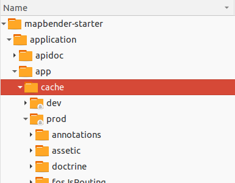

Details zur Konfiguration von Mapbender3¶
Konfigurationsschritte¶
Im Folgenden werden die für die Mapbender3-Installation aufgeführten Konfigurationsschritte von Mapbender3 näher erläutert. Es sind sechs Schritte notwendig:
- Erzeugen der Datenbank
- Erzeugen der Datenbankschemas
- Kopieren des bundle Assets in das öffentliche web-Verzeichnis
- Erzeugen des “root” Benutzers
- Laden der SRS Parameters (EPSG-Code Definition)
- Laden der Anwendungen der mapbender.yml Definition in die Datenbank
Diese Schritte werden mit dem console-Hilfsprogramm des Symfony Frameworks durchgeführt, auf dem Mapbender3 aufbaut. Hier noch ein wichtiger Hinweis, bevor Sie fortfahren:
Das console-Hilfsprogramm wird Dateien in die Verzeichnisse app/cache und app/logs schreiben. Für diese Operationen werden die Benutzerrechte des Benutzers benötigt, mit dem Sie angemeldet sind. Sie benötigen ebenfalls Benutzerrechte für das Verzeichnis app/db und die SQLite Datenbank. Wenn Sie die Applikation in Ihrem Browser öffnen, wird der Server-PHP- Prozess versuchen, auf diese Dateien zuzugreifen oder in die Verzeichnisse zu schreiben mit anderen Benutzerrechten. Stellen Sie sicher, dass Sie den Verzeichnissen und Dateien Schreib- und Leserechte zugewiesen haben.
Wichtiger Hinweis: Die folgenden app/console Schritte gehen davon aus dass Sie sich oberhalb des app-Verzeichnisses befinden (für die git-Installation bedeutet das mapbender3/application/ andernfalls mapbender3/).
cd mapbender3/
oder für die git-basierte Installation
cd mapbender3/application
Anpassen der Konfigurationsdatei¶
Die Parameter der Datenbankverbindung sind zusammen mit einigen anderen Konfigurationsparametern in der Datei app/config/parameters.yml gespeichert. In dieser Datei wird YAML Syntax verwendet. Achten Sie darauf keine Tabulatoren für Einrückungen zu verwenden. Verwenden Sie stattdessen Leerzeichen.
Ihre Datenbankkonfiguration könnte in der parameters.yml könnte folgendermaßen aussehen, wenn Sie PostgreSQL verwenden:
database_driver: pdo_pgsql
database_host: localhost
database_port: 5432
database_name: mapbender3
database_path:
database_user: postgres
database_password: geheim
Mehr Informationen dazu finden Sie im Kapitel Konfiguration der Datenbank.
Erzeugen der Datenbank¶
Mit Symfony2 kann die Datenbank erzeugt werden. Beachten Sie, dass dazu die benötigten Datenbank-Benutzerrechte vorliegen. Rufen Sie folgenden Befehl mit dem console-Hilfsprogramm auf:
app/console doctrine:database:create
Erzeugen des Datenbankschemas¶
Erzeugen des Datenbankschemas über Symfony2:
app/console doctrine:schema:create
Kopieren des Asset Bundles¶
Jedes Bundle hat seine eigenen Abhängigkeiten - CSS-Dateien, JavaScript-Dateien, Bilder und mehr – diese müssen in das öffentliche web-Verzeichnis kopiert werden:
app/console assets:install web
Sie können auch einen symbolischen Link verwenden, statt die Dateien zu kopieren. Dies erleichtert die Bearbeitung der abhängigen Dateien in den bundle-Verzeichnissen.
app/console assets:install web --symlink --relative
Erzeugen des administrativen Benutzers¶
Der erste Benutzer, der alle Privilegien hat, wird mit folgendem Kommando erzeugt:
app/console fom:user:resetroot
Dieses Kommando wird interaktiv alle notwendigen Informationen abfragen und den Benutzer in der Datenbank erzeugen.
Sie können auch den Modus “silent” verwenden, wenn Sie ein Skript nutzen möchten, um Mapbender3 zu installieren und dabei nicht nach Parametern gefragt werden wollen.
app/console fom:user:resetroot --username="root" --password="root" --email="root@example.com" --silent
Einfügen der SRS Parameter¶
Fügen Sie die Informationen zu den Koordinatensystemen über den folgenden Aufruf in die Datenbank:
app/console doctrine:fixtures:load --fixtures=./mapbender/src/Mapbender/CoreBundle/DataFixtures/ORM/Epsg/ --append
Importieren von Anwendungen aus der mapbender.yml¶
Sie können die Anwendungen, die in der mapbender.yml definiert sind, in die Datenbank importieren:
app/console doctrine:fixtures:load --fixtures=./mapbender/src/Mapbender/CoreBundle/DataFixtures/ORM/Application/ --append
Konfigurationsdateien¶
Die Basiskonfiguration erfolgt in der Datei app/config/parameters.yml. Eine Vorlage app/config/parameters.yml.dist liegt vor.
Die Konfigurationsdatei app/config/config.yml stellt weitere Parameter bereit, z.B. zur Konfiguration der Portalfunktion, Einrichtung des Owsproxy oder Einrichtung einer weiteren Datenbank.
parameters.yml¶
- Datenbank: Parameter, die mit database beginnen, definieren die Databankverbindung.
- Mailer: Die Mailerangaben starten mit mailer. Nutzen Sie z.B. smtp oder sendmail.
- Spracheinstellung: Sie können eine Sprache (locale) für Ihre Anwendung angeben (Standardwert ist en, de ist verfügbar). Unter http://doc.mapbender3.org/en/book/translation.html erfahren Sie mehr über die Anpassung von Übersetzungen und wie neue Sprachen hinzugefügt werden können.
Hinweis: Sie benötigen einen Mailer, wenn Sie die Selbstregistrierung und das Paßwortsetzen nutzen möchten.
Sofern Sie einen Proxy verwenden, müssen Sie diesen in der Datei parameters.yml im Bereich OWSProxy Configuration angeben.
Eine Konfiguration könnte wie folgt aussehen:
# OWSProxy Configuration
ows_proxy3_logging: false
ows_proxy3_obfuscate_client_ip: true
ows_proxy3_host: myproxy
ows_proxy3_port: 8080
ows_proxy3_connecttimeout: 60
ows_proxy3_timeout: 90
ows_proxy3_user: ~
ows_proxy3_password: ~
ows_proxy3_noproxy:
- 192.168.1.123
config.yml¶
- fom_user.selfregistration: Um die Selbstregistrierung zu de/aktivieren, passen Sie den fom_user.selfregistration Parameter an. Sie müssen unter self_registration_groups eine/mehrere Gruppen angeeben, so dass selbstregistriere Anwender automatisch (bei der Registrierung) diesen Gruppen zugewiesen werden. Über die Gruppe bekommen Sie dann entsprechend Rechte zugewiesen.
- fom_user.reset_password: Über diesen Parameter kann die Möglichkeit de/aktiviert werden, das Passwort neu zu setzen.
- framework.session.cookie_httponly: Stellen Sie für HTTP-only session cookies sicher, dass der Parameter framework.session.cookie_httponly auf true steht.
Hinweis: Sie benötigen einen Mailer, wenn Sie die Selbstregistrierung und das Paßwortsetzen nutzen möchten.
mapbender.yml¶
Eine Anwendung kann auf zwei Arten konfiguriert werden. Entweder über die mapbender.yml Datei oder über die Mapbender3 Administration im Browser.
- Das Mapbender Team stellt mit jeder Version eine mapbender.yml mit Demoanwendungen mit den aktuellen Elementdefinitionen zur Verfügung (Sie können die Anwendungen deaktivieren indem Sie published: false setzen oder indem Sie die Datei leeren).
- Anwendungen, die in der mapbender.yml definiert werden, können nicht über die Mapbender3 Administration im Browser bearbeitet werden.
- Sie können allerdings die Anwendungen über einen app/console Befehl in die Datenbank übertragen.
app/console doctrine:fixtures:load --fixtures=./mapbender/src/Mapbender/CoreBundle/DataFixtures/ORM/Application/ --append
Produktions- und Entwicklerumgebung und Caches: app.php und app_dev.php¶
Mapbender3 bietet zwei Umgebungen an: eine Produktionsumgebung für den normalen Betrieb- und eine Entwicklerumgebung, in dem die Anwendungen getestet werden können. Dieses Konzept orientiert sich an den “Environments” im Symfony Framework.
Die Produktionsumgebung wird mit der URL http://localhost/mapbender3/app.php aufgerufen, die Entwicklungsumgebung mit der URL http://localhost/mapbender3/app_dev.php. Der Aufruf über app_dev.php kann und sollte nur nur vom localhost erfolgen.
Es gibt Unterschiede im Verhalten von app.php und app_dev.php:
Der Cache-Mechanismus verhält sich in der Entwicklungsumgebung anders: Es werden nicht alle Dateien gecacht, so dass vorgenommene Änderungen direkt sichtbar sind. Dadurch ist der Aufruf einer Anwendung über app_dev.php immer langsamer als im Produktivbetrieb.
Im Detail werden in der Entwicklerumgebung von Mapbender3 u.a. die CSS, JavaScript und Übersetzungsdateien nicht gecacht.
In der Produktionsumgebung werden diese aber in app/cache abgelegt.
In der Entwicklerumgebung werden Fehlermeldungen und ihr Stacktrace direkt an der Oberfläche angezeigt. In der Produktionsumgebung werden die Fehlermeldungen in die Datei app/log/prod.log geschrieben.
Die Entwicklungsumgebung zeigt den Symfony Profiler an. Dort werden Dinge protokolliert, die nur für die Entwickler, aber nicht für Außenstehende sichtbar sein sollten.
{kind=link}
Das Verzeichnis app/cache enthält die einzelnen Cache-Dateien. Es werden Verzeichnisse für jede Umgebung (prod und dev) angelegt, das Verhalten des dev-Caches ist aber, wie angesprochen, anders.
Bei Änderungen an der Oberfläche oder im Code von Mapbender3 ist das Cache Verzeichnis (app/cache) zu leeren, damit die Änderungen in der Produktionsumgebung sichtbar werden.
Der folgende Screenshot zeigt den Ort der Cache-Verzeichnisse innerhalb von Mapbender3:
{kind=link}
Logging in Mapbender3¶
Das Log-Level wird in den Dateien config_dev.yml und config_prod.yml definiert. Diese liegen im Ordner application/app/config/. Die config-Dateien sind für die jeweiligen Umgebungen (siehe Produktions- und Entwicklungsumgebung) verantwortlich.
In der Entwicklungsumgebung (bei der Entwicklung in lokalen Systemen) wird Mapbender3 über die app_dev.php aufgerufen und hier ist die config_dev.yml verantwortlich. Im Produktivbetrieb, bei der die app.php eingesetzt wird, kommt die config_prod.yml zum Einsatz.
Loglevel¶
Es gibt insgesamt 6 Loglevel (englische Beschreibung):
- DEBUG (100): Detailed debug information.
- INFO (200): Interesting events. Examples: User logs in, SQL logs.
- NOTICE (250): Normal but significant events.
- WARNING (300): Exceptional occurrences that are not errors. Examples: Use of deprecated APIs, poor use of an API, undesirable things that are not necessarily wrong.
- ERROR (400): Runtime errors that do not require immediate action but should typically be logged and monitored.
- CRITICAL (500): Critical conditions. Example: Application component unavailable, unexpected exception.
- ALERT (550): Action must be taken immediately. Example: Entire website down, database unavailable, etc. This should trigger the SMS alerts and wake you up.
- EMERGENCY (600): Emergency: system is unusable.
Die Beschreibung der Loglevels orientiert sich an dem Syslog Protocol der IETF.
config_dev.yml¶
Der verantwortliche Teil in der config_dev.yml ist im Abschnitt “monolog” zu finden:
monolog:
handlers:
main:
type: stream
path: %kernel.logs_dir%/%kernel.environment%.log
level: debug
firephp:
type: firephp
level: info
Es sind zwei “Handler” beschrieben, main und firephp.
- main: Der Handler
mainist auf das Logleveldebugeingestellt und streamt alle Einträge in eine Datei, die unterpathdefiniert ist. Diese Datei wird mit Hilfe von Variablen definiert und im Endeffekt bedeutet es, dass in die Dateidev.logim Ordnerapplication/app/logs/geschrieben wird. - firephp: Der Handler
firephpkann mit einer entsprechenden Extension im Browser kommunizieren. Somit hat der Entwickler die Möglichkeit sich Debug-Meldungen direkt im Browser anzeigen zu lassen und muss nicht die Logdateien öffnen.
Diese sind die die bevorzugten Einstellungen für Entwicklungsarbeiten.
config_prod.yml¶
monolog:
handlers:
main:
type: fingers_crossed
action_level: error
handler: nested
nested:
type: stream
path: "%kernel.logs_dir%/%kernel.environment%.log"
level: debug
Mit diesen Einstellungen wird ein zweistufiges Logging erreicht. Auch hier haben wir zwei “Debug-Handler”: main und nested.
main: Der
main-Handler ist vom Typfingers-crossedund auf das Levelerroreingestellt. Das bedeutet, dass dieser Handler nur aktiviert wird, wenn ein Fehler auftritt.nested: Der
main-Handler ruft dann den Handlernestedauf, der die Meldungen in dieprod.logschreibt.Dieser Handler ist per Default auf
debugeingestellt, so dass bei einem Fehler in derprod.logdann auch die Debug-Meldungen erscheinen.Möchte man die Ausgabe der Debug-Meldungen unterbinden, kann man dort ebenfalls das Level
erroreintragen.
Weiterführende Links:
- Im Paket “monolog”:
- Using Monolog (englisch)
- Handlers, Formatters and Processors (englisch)
- Symfony, Monolog and different log types. Blogeintrag von Benjamin Eberlei (englisch).